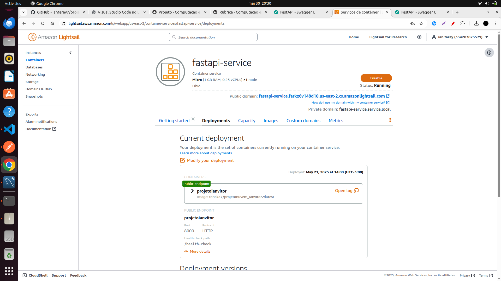

Roteiro Do Projeto
Este roteiro está dividido em duas etapas:
- Etapa 1: Desenvolvimento da API com FastAPI, MySQL e autenticação JWT.
- Etapa 2: Deploy da aplicação na AWS utilizando o serviço Lightsail, com container para a API e banco de dados MySQL.
ETAPA 1
Introdução
Este roteiro tem como objetivo apresentar nosso projeto de Computação em Nuvem, no qual desenvolvemos uma API com três endpoints conectados a um banco de dados MySQL. Para autenticação, utilizamos o sistema JWT (JSON Web Token). A API possui três funcionalidades principais: a criação de usuário, que permite cadastrar um novo usuário e, em caso de sucesso, gera e retorna um token JWT; o login, que permite que um usuário existente se autentique e receba um novo token JWT; e a consulta da cotação do dólar, que exige um token válido para acesso e, quando chamado com sucesso, retorna a cotação atual do dólar. A cotação do dólar é obtida via web scraping com requests e BeautifulSoup. O endpoint /consultar faz uma requisição GET para o site x-rates.com, simula um navegador com User-Agent e analisa o HTML retornado. O código procura links com from=USD&to=BRL, extrai os valores, converte para float e inclui um timestamp UTC. O resultado é retornado em JSON.
Como executar a aplicação
Para executar a aplicação, siga os passos abaixo:
1. Certifique-se de ter o Docker instalado em sua máquina.
2. baixe ou crie um arquivo docker-compose.yaml com o conteúdo fornecido abaixo.
3. Execute o comando docker-compose up --build no terminal, dentro do diretório onde o arquivo docker-compose.yaml está localizado.
Documentação dos Endpoints
1. Registrar Usuário
Endpoint: POST /registrar
Descrição: Cria um novo usuário no sistema e retorna um token JWT em caso de sucesso.
Request Body:
2. Login
Endpoint: POST /login
Descrição: Autentica um usuário existente e retorna um token JWT em caso de sucesso.
Request Body:
3. Consultar Cotação do Dólar
Endpoint: GET /consultar
Descrição: Retorna a cotação do dólar (USD/BRL) em tempo real.
Requer autenticação (token JWT válido no header Authorization).
Request Headers:
Respostas:
-
200 – Sucesso ```json { "cotacao": 5.25, "timestamp": "2024-05-27T14:00:00Z" }
``` - 401 – Não autorizado
4. Health Check
Endpoint: GET /health-check
Descrição: Verifica se a API está em funcionamento.
Request Parameters:
Nenhum parâmetro necessário.
Respostas:
- 200 – Sucesso
screenshot com os endpoints testados;
1. Registro de Usuário
Figura 1: Teste do endpoint de registro de usuário.
{kind=link}
2. Login
Figura 2: Teste do endpoint de login.
{kind=link}
3. Consulta da Cotação do Dólar
Figura 3: Teste do endpoint de consulta da cotação do dólar.
{kind=link}
video de execução da aplicação
https://youtu.be/zkUPKOQrS5k
Comando para subir a imagem no Docker Hub
docker build -t tanaka7/projetonuvem_ianvitor2:latest ./api
docker push tanaka7/projetonuvem_ianvitor2:latest
link para o docker hub do projeto;
https://hub.docker.com/r/tanaka7/projetonuvem_ianvitor2
Compose se encontra nesse link
https://github.com/ianfaray7/projetonuvem_ianvitor/blob/main/docker-compose.yml
compose.yaml
version: '3.8'
services:
api:
image: tanaka7/projetonuvem_ianvitor2:latest
ports:
- "8000:8000"
environment:
- DATABASE_URL=mysql+mysqlconnector://${MYSQL_USER}:${MYSQL_PASSWORD}@{MYSQL_HOST}:3306/${MYSQL_DATABASE}
- MYSQL_USER=${MYSQL_USER:-root}
- MYSQL_PASSWORD=${MYSQL_PASSWORD:-1412}
- MYSQL_HOST=db
- MYSQL_DATABASE=${MYSQL_DATABASE:-cloud}
- SECRET_KEY=${SECRET_KEY:-09d25e094faa6ca2556c818166b7a9563b93f7099f6f0f4caa6cf63b88e8d3e7}
- ALGORITHM=${ALGORITHM:-HS256}
- ACCESS_TOKEN_EXPIRE_MINUTES=${ACCESS_TOKEN_EXPIRE_MINUTES:-30}
- DEBUG=${DEBUG:-true}
depends_on:
db:
condition: service_healthy
db:
image: mysql:8.0
restart: always
environment:
- MYSQL_ROOT_PASSWORD=${MYSQL_PASSWORD}
- MYSQL_DATABASE=${MYSQL_DATABASE}
ports:
- "3306:3306"
volumes:
- mysql_data:/var/lib/mysql
healthcheck:
test: ["CMD", "mysqladmin", "ping", "-h", "localhost"]
interval: 10s
timeout: 5s
retries: 5
volumes:
mysql_data:
üöÄ ETAPA 2 ‚Äî Deploy na AWS
Introdução
Nesta etapa, realizamos a implementação da nossa API na AWS utilizando o serviço Lightsail. Foi criado um container para subir a imagem Docker da aplicação e, em outro serviço, configuramos o banco de dados MySQL.
Como executar a aplicação
Para executar a aplicação, basta acessar o seguinte endereço:
fastapi-service.farkx6v148d10.us-east-2.cs.amazonlightsail.com
Em seguida, utilize os endpoints conforme descrito na documentação acima para realizar os testes.
Como foi feito o deploy na AWS
Deploy do MySQL
Para o banco de dados MySQL, utilizamos o serviço Lightsail da AWS. Criamos uma instância dedicada do MySQL e, durante a configuração, definimos as variáveis essenciais, como nome do banco de dados, usuário e senha.
Para realizar o deploy da aplicação na AWS, seguimos os seguintes passos: 1. Criamos uma instância do Amazon Lightsail. 2. Configuramos a instância para utilizar uma imagem personalizada. 3. Enviamos a imagem Docker da aplicação para o repositório do Amazon Lightsail. 4. Configuramos as variáveis de ambiente necessárias para a aplicação, principalmente as de acesso ao banco de dados (nome do banco, usuário e senha), definidas durante a criação do banco MySQL no Lightsail.
Explicação sobre a integração app ↔ banco:
- Host: O endereço do banco de dados (geralmente o nome do serviço ou IP da instância MySQL no Lightsail) é informado na variável de ambiente MYSQL_HOST.
- Porta: A aplicação se conecta ao banco pela porta padrão do MySQL, 3306, que deve estar aberta tanto no container quanto na configuração de rede do Lightsail.
- Usuário e Senha: São definidos nas variáveis MYSQL_USER e MYSQL_PASSWORD e utilizados pela aplicação para autenticação segura no banco.
- Nome do Banco: Definido na variável MYSQL_DATABASE, garante que a aplicação acesse o banco correto.
- Segurança: As credenciais são passadas via variáveis de ambiente e não ficam expostas no código-fonte. Recomenda-se utilizar variáveis seguras e, se possível, restringir o acesso ao banco apenas à aplicação.
- Exemplo de string de conexão:
- Abrimos as portas necessárias para o funcionamento da aplicação, como a porta 8000 para a API e a porta 3306 para o banco de dados MySQL.
- Deixamos a porta da API publicamente acessível e configuramos o health check para monitorar se a aplicação está rodando corretamente.
Screenshot com os endpoints testados (AWS)
1. Registro de Usuário (AWS)
Figura 1: Teste do endpoint de registro de usuário em ambiente AWS.
{kind=link}
2. Login (AWS)
Figura 2: Teste do endpoint de login em ambiente AWS.
{kind=link}
3. Consulta da Cotação do Dólar (AWS)
Figura 3: Teste do endpoint de consulta da cotação do dólar em ambiente AWS.
{kind=link}
4. Health Check (AWS)
Figura 4: Teste do endpoint de health check em ambiente AWS.
{kind=link}
screenshot da infraestrutura funcionando na AWS;
1. Container da Aplicação na AWS
 Figura 1: Container da aplicação rodando na AWS Lightsail.
{kind=link}
2. Banco de Dados MySQL na AWS
Figura 2: Banco de dados MySQL configurado na AWS Lightsail.
{kind=link}
Custo AWS
Figura: Print do painel de custos da AWS referente ao projeto.
{kind=link}
Recursos Alocados na AWS
Serviço de Container (Lightsail)
- Plano: Micro
- Capacidade: 1 GB RAM, 0.25 vCPUs por nó
- Escala: 1 nó (pode ser ajustado para múltiplos nós)
- Custo: Gratuito nos primeiros 90 dias, depois $10 USD/mês por nó
- Transferência de dados: 500 GB/mês incluídos; excedente a partir de $0.09 USD/GB (varia por região)
Projeção de custos para diferentes quantidades de instâncias:
| Instâncias (nós) | RAM total | vCPUs totais | Custo mensal (após 90 dias) |
|---|---|---|---|
| 1 | 1 GB | 0.25 | $10 USD |
| 5 | 5 GB | 1.25 | $50 USD |
| 10 | 10 GB | 2.5 | $100 USD |
Banco de Dados MySQL (Lightsail)
- Plano: fastapi-db
- Capacidade: 1 GB RAM, 2 vCPUs, 40 GB SSD
Vídeo de Execução da Aplicação na AWS
Assista ao vídeo demonstrando a aplicação em funcionamento na AWS:

Arquitetura Final do Projeto (AWS)
flowchart TD
User[Usuário] <--> API[FastAPI - Container AWS Lightsail]
API <--> DB[(MySQL Lightsail - Banco de Dados)]
subgraph AWS
API
DB
end